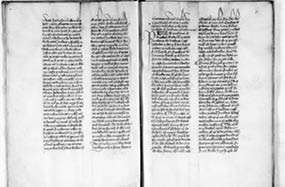
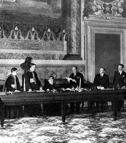
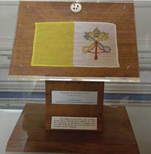

Roma’dan Vatikan’a Sahtekârlıkta Sebat
Roma Papalık makamı ve devletinin kurucu yasası “Konstantin’in Vasiyeti” belgesinin sahteliği Lorenzo Valla tarafından bilimsel olarak kanıtlandıktan öteye Protestan reformunun temel gerekçesini oluşturmuştu.
Ama sahtekârlık, Konstantin’e atfedilen vasiyetten ibaret değildi. Bu çakma vasiyete dayanarak, sanki yüzyıllar önce yazılmış, kaybolmuş ve tozlu raflarda, tıpkı vasiyet gibi üzerlerinden dört yüzyıl geçtikten sonra bulunmuş gibi yapılan tam 204 Papalık fetvası vardı daha...

“Sahte Fetvalar Derlemesi” Fransız Millî Kütüphanesi
Roma Patrikliği tahtına geçen Papaların başları sıkıştıkça imal ettirip yüzyıllar önce yürürlüğe girmiş kadim kanunlar gibi kullandıkları bu fetvaların; tıpkı dayandıkları kutsal vasiyet gibi sahte olup 850 yılından sonra peyderpey yazıldıkları da Cenevre’de vaizlik yapan reformist rahip David Blondel tarafından kanıtlandı.
Hem de bugün bize çok basit ve mantıklı gelen ama geçmişte ilk olarak Lorenzo Valla’nın kullandığı ve “Konstantin’in Bağışı” belgesinin sahteliğini kanıtladığı “tarih karşılaştırma” yöntemiyle...
853 yılından sonra aralıklarla sirkülasyona sokulan toplam 204 fetva, sözüm ona Hıristiyanlığın ilk üç yüzyılında hüküm süren Papaların kararlarıydı... Bu Papalar, bu fetvalara Vulgate diye anılan Latince İncil’den pasajlar koymuşlardı. Oysa İncil, ancak dördüncü yüzyılda Latinceye çevrilmiş, yani fetvaları veren Papalar zamanında Vulgate yoktu ve İncil’in Yunancası okunuyordu!
Rahip David Blondel, “Papalık Fetvaları”nın sahteliğini kanıtladığında takvimler 1628 yılını gösteriyordu.
Çakma bir vasiyetle 900 yıl önce kurulan Papalık Devletleri, tam 800 yıl bu vasiyete dayanarak imal edilen çakma fetvalarla öncülük etmişlerdi Batı Roma Hıristiyanlığına!
Tarihin en büyük ve seyrini değiştiren yalanın üzerinde yükselen Papalık Devletleri’nin, 1000. yaşını görkemle kutlamasına bir yüzyılcık kalmıştı.
Temellerinin sahteliği, varoluşunu sarstı mı dersiniz?
Hayır. Kurumsal yalan öyle bir oturmuş, öyle bir yerleşmişti ki zamanla, gerçeğin ortaya çıkışı Papalık makamını hiç mi hiç ırgalamadı.
Papalık Devletleri, İtalik Yarımadası’nın 1869-1870 yılları arasında sahne olduğu siyasal karışıklık ve savaşların sonunda, ulusal birliği kurmayı başaran İtalya Krallığı tarafından ilhak edilip ortadan kalktı. Papa Dokuzuncu Pius, o zamana kadar Roma Papalık sarayı olan Quirinale’den44 kaçıp Vatikan sarayına sığındı.
Ama 1870 yılında Vatikan’da toplanan Konsil’de (din kurultayı) Papa’nın yeryüzünde Tanrı’nın tek temsilcisi, Hıristiyanlık âlemine ama bu kez salt ruhani anlamda evrensel öncülüğü ve kararlarında yanılmazlığı ilkesi; yine Konstantin’in sahte vasiyetinden aldığı çakma meşruiyete dayandırılarak “dogma” (inkârı yasak kutsal kural) ilan edildi!
Vatikan Konsili’nde dogma ilan edilen bu kararla, Papa ve Papalık

1929 Laterano Sözleşmesi imza töreni.
Mussolini ayakta, güven mektubunu okurken.
kurumuna bağlı Katolik Kilise yönderleri, düpedüz gerçekle alay ediyorlar; “Konstantin’in Bağışı” belgesinin sahteliğini görmezden geliyor, sahtekârlığı ortaya koyan bilginleri, bilimsel kanıtları ve yayınları yok sayıyorlardı.
Yetmedi.
1917’de gerek Konstantin’in sahte vasiyeti, gerekse bu belgeye dayanarak imal edilen sahte “Papalık Fetvaları”, Katolik Kilise Hukuku’nda 300 kanun maddesinin temelini oluşturdu.
1929’da Faşist İtalya Devleti ile Roma Katolik Kilisesi kurumu (Papalık) arasında yapılan Laterano Sözleşmesi’yle Vatikan Devleti resmen kuruldu. Sözleşmeyi, faşist İtalya adına bizzat Mussolini, Papalık makamı adına da Kardinal Gasparri imzaladı.45

Vatikan’ın 1969’da, Apollo 11 ekibiyle aya götürülüp getirilen bayrağı/
(beyaz mahfaza içinde) Vatikan’a armağan edilen ay taşları
Başkent Roma’nın il sınırları içinde 0,44 km2lik bir alana yayılan Vatikan Şehir Devleti (Stato della Città del Vaticano), dünyanın yüzölçümü en küçük ama malvarlığı en zengin devletidir. Yönetim biçimi, seçimli mutlak monarşi olup devlet başkanı Papa, hem yasama, yürütme ve yargının başkanı hem de Katolik Kilise’nin küresel önderidir. Sözü, yasa hükmündedir.
Tarihsel anlamda Katolik mezhebine bağlı ülkelerde yaygın olarak kullanılan bazı ansiklopediler ve sanal bilgi kaynaklarında, Vatikan Devleti’nin tanımı günümüzde: “Aziz Petrus’tan beri Papalık makamı ve İmparator Konstantin’den (4. Yüzyıl) öteye Hıristiyanlık âleminin resmî merkezi” biçiminde yazılıdır.
Başka bir deyişle, 21. yüzyılda bile Papalık Devleti’nin meşruiyeti yer yer, hâlâ ve inatla Konstantin’in sahte vasiyetine dayandırılmaktadır!
Katolik Kilisesi kurumu, 19. yüzyılın sonundan itibaren gerek “Konstantin’in Bağışı”, gerekse bu vasiyete dayandırılan “Papalık Fetvaları”nın sahteliğini kabullenmesine rağmen açık seçik dillendirmedi. Sadece sahte vasiyeti ve fetvaların maddi varlığını ortadan kaldırmak, “gizli arşivler”inde gözlerden gizlemekle yetindi.
Çünkü Konstantin’in sahte vasiyeti, “Hatice’ye değil neticeye bak”ın Latincesi, sonuca bakınca aracı sahtekârlığı haklı kılan bir hayırlılık durumu. Böyle bir sahtekârlık yapılmamış olsaydı, bugün Hıristiyanlık âleminin kutsal makamı İstanbul’daki Fener Rum Patrikliği olacak ve... Müslüman bir ülkede, Fatih ilçesi gibi aşırı İslamcı bir nüfusun kuşatması altında kalacaktı.
Konstantin’in sahte vasiyeti olmasa, belki de Dördüncü Haçlı Seferi yapılmayacaktı. Hıristiyanlığın kutsal başkenti Konstantinopolis, 1204’te maruz kaldığı Haçlı işgal ve talanına belki de uğramayacaktı. Doğu Roma İmparatorluğu zayıflamayacak, Batı Roma’dan bunca nefret etmeyecekti, belki de. Ama en önemlisi, Konstantin’in sahte bağışı ve Dördüncü Haçlı Seferi olmasa, Doğu Ortodoksları Sultan’ın kavuğunu kuşkusuz yeğlemezlerdi Papa’nın külahına...
Sözün özü, eğer “Konstantin’in Bağışı” adı altında böyle bir sahte vasiyet düzülmeseydi Batı tarihinde, belki de Doğu Roma yalnız kalmazdı Osmanlı orduları karşısında ve Konstantinopolis, İstanbul olmayabilirdi.
Nova Roma, Konstantinopolis, İstanbul...
1684 yaşına basan bu kutsal kültür mirası, sadece 561 yıldan beri bizim mülkümüz.
Miras demiş, sende de durayım biraz.
Roma yıkılmış, Osmanlı yıkılmış, elbet Türkiye ilelebet payidar kalacaktır da...
Sıra kimin?
Khalkedonia (Kadıköy), 2013.
44 Quirinale Sarayı, o gün bugündür İtalya Devlet Başkanlığı konutudur.
45 Bu kitapta şu âna kadar Papalık Devletleri’nden söz ederken Vatikan kısaltmasını hiç kullanmamamın nedeni, Papaların sadece 1870’ten beri ikamet ettiği Vatikan’ın ancak 1929’dan öteye devlet ve Katolik dünyanın merkez makamı olmasıdır.